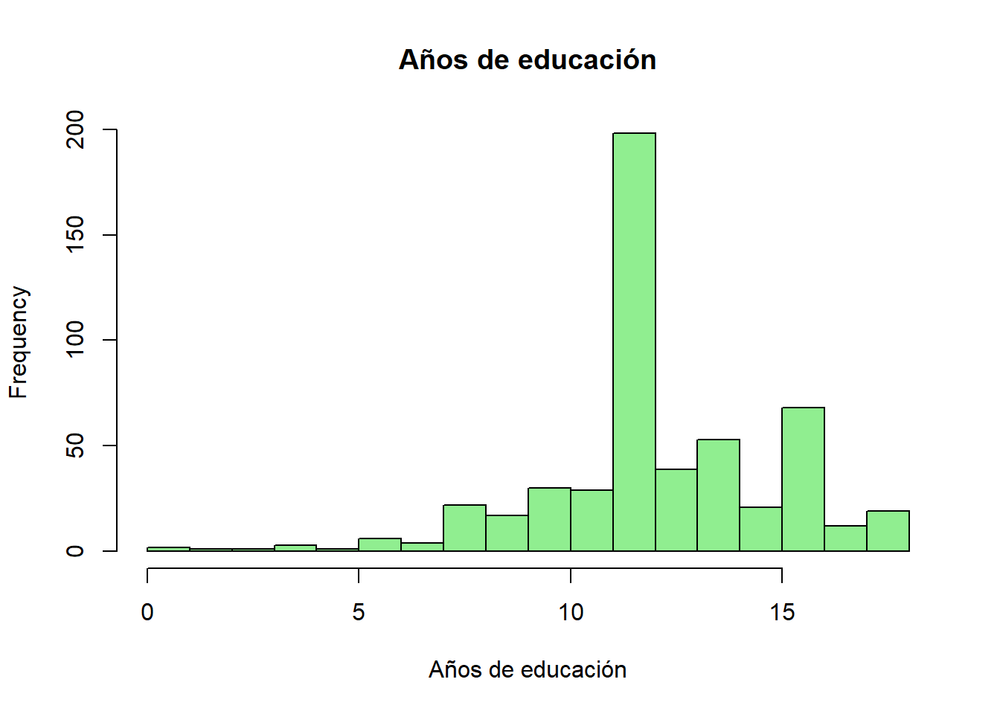
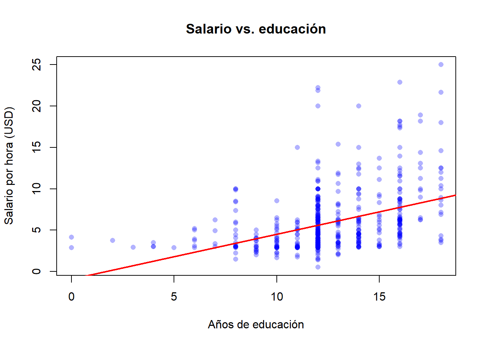

Code
library(wooldridge)
data("wage1")str(), summary(), head(), hist(), plot() y tapply(), y calcular medias condicionales para detectar asociaciones brutas.¿Asistir a la universidad causa mayores salarios, o las personas que de todos modos habrían ganado más tienden a ir a la universidad?
A lo largo del curso veremos que responder a esta pregunta —y a muchas otras del mismo tipo— exige algo más que una simple correlación entre nivel educativo y salario. Hace falta un modelo, una muestra y, sobre todo, un diseño que nos permita atribuir las diferencias observadas a la causa que nos interesa.
econometría es la aplicación de métodos estadísticos a datos económicos con el fin de dar contenido empírico a las relaciones económicas. Su objetivo principal es la estimación y contraste de relaciones entre variables económicas. Algunos ejemplos típicos:
En general nos referimos a estas variables como \(X \Rightarrow Y\), donde \(X\) es la variable independiente (también llamada regresora o explicativa) e \(Y\) es la variable dependiente (también respuesta o resultado). Frente a cualquier relación de este tipo surgen dos preguntas fundamentales:
Cada día, quienes toman decisiones se enfrentan a preguntas cuantitativas:
La econometría es la caja de herramientas para responder este tipo de preguntas con datos (Wooldridge 2020).
El modelo econométrico consta de dos componentes:
Algunos factores asociados al salario por hora de un individuo son la edad, el género, la experiencia y la educación: \[ \text{Salario} = f(\text{Edad},\ \text{Género},\ \text{Experiencia},\ \text{Educación}) + u \] Una especificación lineal sería: \[ \text{Salario} = \beta_0 + \beta_1\,\text{Edad} + \beta_2\,\text{Género} + \beta_3\,\text{Experiencia} + \beta_4\,\text{Educación} + u \] Los coeficientes \(\beta_0, \beta_1, \ldots, \beta_4\) son parámetros desconocidos que queremos estimar a partir de una muestra de datos y de una técnica econométrica (por ejemplo, Mínimos Cuadrados Ordinarios; véase el Capítulo 2).
Dos observaciones importantes:
El modelo econométrico cumple tres grandes funciones, que conviene distinguir desde el principio:
El tercer punto pertenece a lo que se conoce como la Revolución de la Credibilidad en economía empírica, que enfatiza la importancia de identificar efectos causales en lugar de limitarse a constatar correlaciones (Hill et al. 2017). Las técnicas que veremos en los capítulos siguientes —MCO, controles, variables instrumentales (en cursos posteriores), diferencias-en-diferencias— son herramientas para acercarnos a ese objetivo.
Una de las lecciones más importantes de la econometría es que correlación no implica causalidad. Que dos variables se muevan juntas no significa que una cause la otra. Veamos por qué.
Un hospital quiere saber si los respiradores mecánicos salvan vidas. Una comparación ingenua muestra que los pacientes que reciben respirador mueren más que los pacientes que no lo reciben. ¿Deberíamos concluir que los respiradores matan?
Por supuesto que no. El problema es el sesgo de selección: los pacientes más graves reciben respirador precisamente porque están en peor estado. Esos pacientes habrían tenido mayor mortalidad independientemente de si se les hubiera conectado o no a un respirador.
La correlación entre uso del respirador y muerte es positiva, pero el verdadero efecto causal es negativo (los respiradores salvan vidas). La comparación ingenua confunde el efecto del tratamiento con las características de quien lo recibe.
Comparar las medias de \(Y\) entre quienes reciben un tratamiento y quienes no lo reciben no estima el efecto causal del tratamiento, salvo que la asignación al tratamiento sea independiente de los demás determinantes de \(Y\). Esta independencia raramente se da en datos observacionales.
Los datos muestran una fuerte correlación positiva entre las ventas de helados y los ahogamientos. ¿Deberíamos prohibir los helados para reducir las muertes por ahogamiento?
Obviamente no. La variable omitida es la temperatura. El calor causa a la vez más ventas de helados y más baños en piscinas y playas (y, por tanto, más ahogamientos). Sin controlar por la temperatura, la correlación entre helados y ahogamientos es completamente engañosa: es una correlación espuria.
Formalmente, hablamos de sesgo de variable omitida (SVO) cuando una variable \(Z\) que (i) afecta a \(Y\) y (ii) está correlacionada con \(X\) se deja fuera del modelo. La estimación de \(\beta_1\) —el efecto de \(X\) sobre \(Y\)— absorbe parte del efecto de \(Z\). Volveremos sobre esto con detalle en el Capítulo 3.
Si asignamos aleatoriamente individuos a un grupo de tratamiento y otro de control, ambos grupos tendrán, en media, las mismas características —observables y no observables— antes del tratamiento. Cualquier diferencia en los resultados después del tratamiento puede entonces atribuirse al tratamiento mismo.
Volviendo al ejemplo de los respiradores: si pudiéramos asignar respiradores al azar (no en función de la gravedad), los grupos de tratamiento y control tendrían la misma gravedad media. La diferencia de mortalidad sería una estimación insesgada del efecto causal del respirador.
Por esta razón, los Ensayos Controlados Aleatorizados (ECA) son el «estándar de oro» para establecer relaciones de causalidad.
Un estudio observa que los estudiantes de escuelas privadas obtienen mejores notas en pruebas estandarizadas. ¿Podemos concluir que las escuelas privadas causan un mejor rendimiento?
No: los estudiantes de escuelas privadas suelen proceder de familias con más recursos en el hogar (libros, apoyo, expectativas, redes). Estamos de nuevo ante un sesgo de selección: la «asignación» a la escuela privada no es aleatoria.
La forma en que se generan los datos determina hasta qué punto podemos hablar de causalidad. Conviene distinguir tres grandes diseños empíricos.
Un experimento aleatorizado asigna a los participantes a uno o varios grupos mediante un mecanismo aleatorio (un sorteo, una tabla de números aleatorios, etc.). Uno de los grupos recibe la intervención —el tratamiento— y otro sirve como grupo de control (placebo o práctica habitual). La aleatorización garantiza, en media, la comparabilidad entre grupos y permite inferencia causal directa.
Sin embargo, este tipo de experimentos es poco frecuente en economía y en ciencias sociales por dos razones principales:
Existen, no obstante, ejemplos célebres: el experimento RAND de seguro de salud en Estados Unidos, los programas de transferencias condicionadas tipo PROGRESA/Oportunidades en México, o las evaluaciones de microcréditos del J-PAL.
Con datos cuasi-experimentales, la asignación al grupo de tratamiento y al de control no es aleatoria, sino que depende de algún criterio observable (un umbral administrativo, una regla geográfica, una fecha de corte). Cuando ese criterio es exógeno respecto del resultado de interés, el cuasi-experimento puede aproximarse a un experimento puro.
Durante la pandemia de COVID-19, la Junta de Andalucía impuso confinamientos perimetrales (tratamiento) únicamente a los municipios con una tasa de contagio superior a 1.000 casos por cada 100.000 habitantes:
Comparando municipios «justo por encima» y «justo por debajo» del umbral, es plausible que ambos grupos sean similares en todo lo demás y que las diferencias en, por ejemplo, movilidad o actividad económica reflejen el efecto causal del confinamiento.
Otros diseños cuasi-experimentales habituales son diferencias-en-diferencias, regresión discontinua y variables instrumentales (se estudian en cursos posteriores).
En los datos no experimentales —típicamente encuestas— todas las variables se observan simultáneamente y la asignación a «grupos» no obedece a un diseño explícito: cada agente «se selecciona» en función de sus propias circunstancias. Son los datos más abundantes en economía aplicada.
Ejemplos en España:
Con datos observacionales podemos estimar correlaciones, pero la interpretación causal exige supuestos adicionales (controlar por confusores observables, instrumentos válidos, diseños cuasi-experimentales, etc.). Esto explica por qué buena parte de la econometría moderna se dedica a identificar efectos causales en datos que no proceden de un experimento.
Los datos económicos se presentan en varias formas. Una primera distinción útil es entre el nivel de agregación (datos micro frente a datos macro) y la naturaleza de las variables:
Una segunda distinción —la que más nos ocupará— se refiere a la estructura temporal de los datos.
Datos recogidos sobre unidades muestrales (individuos, hogares, empresas, municipios, países) en un único período. El orden de las observaciones no contiene información: podemos reordenar las filas sin perder nada.
Ejemplo: La Encuesta Nacional de Salud de España 2017 recoge información sanitaria sobre 23.860 hogares en un único año.
Datos recogidos a intervalos regulares de tiempo, donde se registra la misma magnitud económica.
Ejemplos: el precio anual del trigo, la tasa de paro mensual, las cotizaciones diarias del IBEX-35.
Datos sobre micro-unidades individuales que se observan a lo largo de varios períodos. El rasgo clave es que observamos cada micro-unidad en múltiples instantes de tiempo. Si todas las unidades se observan el mismo número de períodos, el panel es balanceado.
Ejemplo: 1.000 empresas seguidas durante 2010-2024, registrando ventas, empleo y exportaciones de cada empresa en cada año.
Conjunto formado por la unión de varias secciones cruzadas independientes, recogidas en distintos períodos. No se siguen las mismas unidades: cada período aporta una muestra nueva. Permite analizar cambios poblacionales a lo largo del tiempo aunque no permite seguir trayectorias individuales.
Ejemplo: unir varias olas de la EPA, donde cada trimestre se extrae una muestra fresca de hogares.
No confundir panel con panel agrupado: la diferencia clave es si las mismas unidades se siguen a lo largo del tiempo (panel) o si se extraen muestras nuevas en cada período (panel agrupado).
En esta práctica usaremos el conjunto de datos wage1 del paquete wooldridge, que contiene información de 526 trabajadores estadounidenses en mayo de 1976 (corte transversal). El objetivo es explorar los datos antes de cualquier modelización: calcular medias y medianas, visualizar distribuciones y obtener medias condicionales que ilustren —pero no demuestren— posibles relaciones.
Si es la primera vez que se usa el paquete wooldridge, hay que instalarlo desde la consola de R con install.packages("wooldridge"). La instalación se hace una sola vez; cargar el paquete con library() se hace en cada sesión.
library(wooldridge)
data("wage1")str(wage1)'data.frame': 526 obs. of 24 variables:
$ wage : num 3.1 3.24 3 6 5.3 ...
$ educ : int 11 12 11 8 12 16 18 12 12 17 ...
$ exper : int 2 22 2 44 7 9 15 5 26 22 ...
$ tenure : int 0 2 0 28 2 8 7 3 4 21 ...
$ nonwhite: int 0 0 0 0 0 0 0 0 0 0 ...
$ female : int 1 1 0 0 0 0 0 1 1 0 ...
$ married : int 0 1 0 1 1 1 0 0 0 1 ...
$ numdep : int 2 3 2 0 1 0 0 0 2 0 ...
$ smsa : int 1 1 0 1 0 1 1 1 1 1 ...
$ northcen: int 0 0 0 0 0 0 0 0 0 0 ...
$ south : int 0 0 0 0 0 0 0 0 0 0 ...
$ west : int 1 1 1 1 1 1 1 1 1 1 ...
$ construc: int 0 0 0 0 0 0 0 0 0 0 ...
$ ndurman : int 0 0 0 0 0 0 0 0 0 0 ...
$ trcommpu: int 0 0 0 0 0 0 0 0 0 0 ...
$ trade : int 0 0 1 0 0 0 1 0 1 0 ...
$ services: int 0 1 0 0 0 0 0 0 0 0 ...
$ profserv: int 0 0 0 0 0 1 0 0 0 0 ...
$ profocc : int 0 0 0 0 0 1 1 1 1 1 ...
$ clerocc : int 0 0 0 1 0 0 0 0 0 0 ...
$ servocc : int 0 1 0 0 0 0 0 0 0 0 ...
$ lwage : num 1.13 1.18 1.1 1.79 1.67 ...
$ expersq : int 4 484 4 1936 49 81 225 25 676 484 ...
$ tenursq : int 0 4 0 784 4 64 49 9 16 441 ...
- attr(*, "time.stamp")= chr "25 Jun 2011 23:03"Cada fila representa un trabajador observado una sola vez en mayo de 1976. No hay índice temporal ni identificadores individuales repetidos: estamos ante un corte transversal, no un panel.
summary(wage1[, c("wage", "educ", "exper", "tenure")]) wage educ exper tenure
Min. : 0.530 Min. : 0.00 Min. : 1.00 Min. : 0.000
1st Qu.: 3.330 1st Qu.:12.00 1st Qu.: 5.00 1st Qu.: 0.000
Median : 4.650 Median :12.00 Median :13.50 Median : 2.000
Mean : 5.896 Mean :12.56 Mean :17.02 Mean : 5.105
3rd Qu.: 6.880 3rd Qu.:14.00 3rd Qu.:26.00 3rd Qu.: 7.000
Max. :24.980 Max. :18.00 Max. :51.00 Max. :44.000 Las variables principales son:
wage: salario por hora en dólares de 1976.educ: años de educación.exper: años de experiencia laboral potencial.tenure: años de antigüedad en el empleo actual.head(wage1[, c("wage", "educ", "exper", "female", "married")]) wage educ exper female married
1 3.10 11 2 1 0
2 3.24 12 22 1 1
3 3.00 11 2 0 0
4 6.00 8 44 0 1
5 5.30 12 7 0 1
6 8.75 16 9 0 1hist(wage1$wage,
breaks = 30, col = "lightblue",
main = "Distribución del salario por hora",
xlab = "Salario (USD/h)")
La distribución del salario es claramente asimétrica a la derecha: la media (aproximadamente 5,90 USD/h) es mayor que la mediana (4,65 USD/h), lo que indica una cola larga de salarios altos. Es un patrón habitual en datos de renta y salarios.
hist(wage1$educ,
breaks = 18, col = "lightgreen",
main = "Años de educación",
xlab = "Años de educación")
plot(wage1$educ, wage1$wage,
pch = 16, col = rgb(0, 0, 1, 0.3),
xlab = "Años de educación",
ylab = "Salario por hora (USD)",
main = "Salario vs. educación")
abline(lm(wage ~ educ, data = wage1), col = "red", lwd = 2)
cor(wage1$wage, wage1$educ)[1] 0.4059033La correlación entre salario y educación es aproximadamente 0,41: positiva, como esperaríamos. Pero conviene ser cauto en la interpretación:
Una forma rápida de detectar asociaciones brutas es calcular la media de \(Y\) por grupos definidos por una variable categórica. En R lo hacemos con tapply().
# Salario medio por género (female = 1 si mujer)
tapply(wage1$wage, wage1$female, mean) 0 1
7.099489 4.587659 # Salario medio por estado civil
tapply(wage1$wage, wage1$married, mean) 0 1
4.843884 6.573469 # Salario medio por intervalos de educación
wage1$educ_grupo <- cut(wage1$educ,
breaks = c(-1, 8, 12, 16, 18),
labels = c("Hasta 8", "9-12", "13-16", "17+"))
tapply(wage1$wage, wage1$educ_grupo, mean) Hasta 8 9-12 13-16 17+
4.461000 4.947701 6.785746 10.936129 Estos números son medias condicionales, no efectos causales. La brecha salarial bruta entre hombres y mujeres (aproximadamente 7,10 vs. 4,59 USD/h) refleja diferencias en ocupación, experiencia, sector, horas, decisiones de fecundidad, posible discriminación, etc. Para interpretarlas como efectos ceteris paribus necesitaremos una regresión múltiple que mantenga fijos los confusores observables (Capítulo 3).
Es perfectamente posible escribir summary(lm(wage ~ educ, data = wage1)) ahora mismo. Pero la interpretación del coeficiente como «retorno causal de un año de educación» exige supuestos fuertes (no SVO, no sesgo de selección). En el Capítulo 2 estimaremos este modelo con cuidado; en el Capítulo 3 introduciremos controles.
Ocho preguntas breves de opción múltiple. Intenta responder cada una antes de desplegar la solución.
Un modelo econométrico se diferencia de un modelo económico puramente teórico en que:
Respuesta: B. Un modelo econométrico combina una forma funcional con una perturbación aleatoria \(u\), lo que permite estimar los parámetros desconocidos a partir de los datos observados.
En el modelo de regresión poblacional \(y = \beta_0 + \beta_1 x + u\), el término de error \(u\):
Respuesta: C. \(u\) es una magnitud poblacional y no observable que agrupa todos los determinantes omitidos de \(y\). El residuo \(\hat{u}_i\) es su análogo muestral, calculado solo tras la estimación.
Un conjunto de datos con información sobre 526 trabajadores entrevistados en mayo de 1976 (una observación por trabajador, todos medidos en el mismo instante) es:
Respuesta: A. Muchas unidades, un único período, sin observaciones repetidas de la misma unidad: la definición estándar de corte transversal.
Las tasas anuales de paro en España de 1980 a 2024 son un ejemplo de:
Respuesta: B. Una única magnitud (la tasa de paro) registrada a una frecuencia regular en el tiempo.
Una base de datos sigue a 1.000 empresas durante los años 2010-2024, registrando las ventas, el empleo y las exportaciones de cada empresa en cada año. Esto es:
Respuesta: D. Las mismas empresas se siguen a lo largo de varios períodos, que es exactamente la estructura de panel.
Una correlación positiva alta entre dos variables \(X\) e \(Y\) implica que:
Respuesta: D. La correlación no dice nada sobre la dirección causal ni sobre la presencia de confusores. El ejemplo de los helados y los ahogamientos del §1.4.2 es la advertencia canónica.
El sesgo de selección aparece cuando:
Respuesta: A. El sesgo de selección es una propiedad de la asignación del tratamiento, no de la estimación ni de la medición. El ejemplo de los respiradores del §1.4.1 es el prototipo.
¿En cuál de los siguientes diseños la aleatorización elimina por construcción el sesgo de selección?
Respuesta: B. Solo la asignación aleatoria garantiza que, en media, las unidades tratadas y no tratadas tengan las mismas características previas al tratamiento.
Ejercicio 1.1 ★ — Clasificación de conjuntos de datos. Clasifique cada uno de los siguientes conjuntos de datos como corte transversal, serie temporal, panel o panel agrupado.
wage1: 526 trabajadores entrevistados en mayo de 1976, una fila por trabajador.Ejercicio 1.2 ★ — Detectar sesgo de selección. Para cada escenario, indique si el sesgo de selección es un problema probable e identifique qué característica lo origina.
Ejercicio 1.3 ★★ — Signo del sesgo de variable omitida. Suponga que regresa el salario por hora sobre los años de educación en una muestra de adultos actualmente empleados, sin controlar por la habilidad innata. Suponga que (i) los trabajadores más hábiles ganan más, manteniendo fija la educación, y (ii) los trabajadores más hábiles tienden a adquirir más educación. ¿Estará el coeficiente de educ sesgado al alza (demasiado positivo) o a la baja (demasiado negativo)? Explique en una frase.
La solución completa se ofrece en la Edición del Profesor.
Ejercicio 1.4 ★★ — Diseño de un experimento aleatorizado. Desea saber si un curso gratuito de preparación para la universidad (el tratamiento) eleva causalmente la probabilidad de que los estudiantes de secundaria de familias con renta baja se matriculen en la universidad. Esboce el diseño de un experimento aleatorizado que permita identificar este efecto causal. Sea explícito en cuanto a: la población, la regla de asignación, los grupos de tratamiento y control, la variable de resultado y el horizonte temporal. Discuta brevemente una objeción ética que su diseño deberá abordar.
La solución completa se ofrece en la Edición del Profesor.
Ejercicio 1.5 ★★ — Un modelo ingenuo con variable omitida. El salario de un trabajador se genera mediante
\[ w = 5 + 2 \cdot \mathit{edu} + u, \qquad \mathbb{E}[u] = 0,\ \operatorname{Var}(u) = 1, \]
donde \(\mathit{edu}\in\{0,1,2,3\}\) son los años de educación postobligatoria. Suponga que la habilidad (recogida en \(u\)) está correlacionada con la educación: \(\mathbb{E}[u\mid \mathit{edu}] = 0{,}5\cdot \mathit{edu}\).
La solución completa se ofrece en la Edición del Profesor.
Ejercicio 1.6 ★★★ — Chocolate y premios Nobel. Se ha documentado (Hill et al. 2017) que los países con mayor consumo de chocolate per cápita también ganan más premios Nobel per cápita. ¿Es esto evidencia de que el consumo de chocolate causa premios Nobel? Identifique (i) al menos una variable omitida plausible, (ii) al menos un canal causal alternativo (causalidad inversa, selección de los países que se miden, etc.) y (iii) describa un diseño de investigación hipotético — experimental o cuasi-experimental — que le permitiera conocer el efecto causal del chocolate sobre la obtención de premios. Sea sincero respecto a por qué es poco probable que este diseño sea factible.
La solución completa se ofrece en la Edición del Profesor.